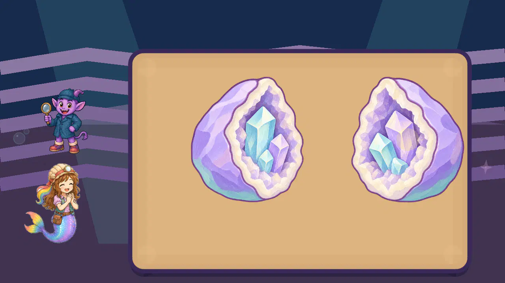
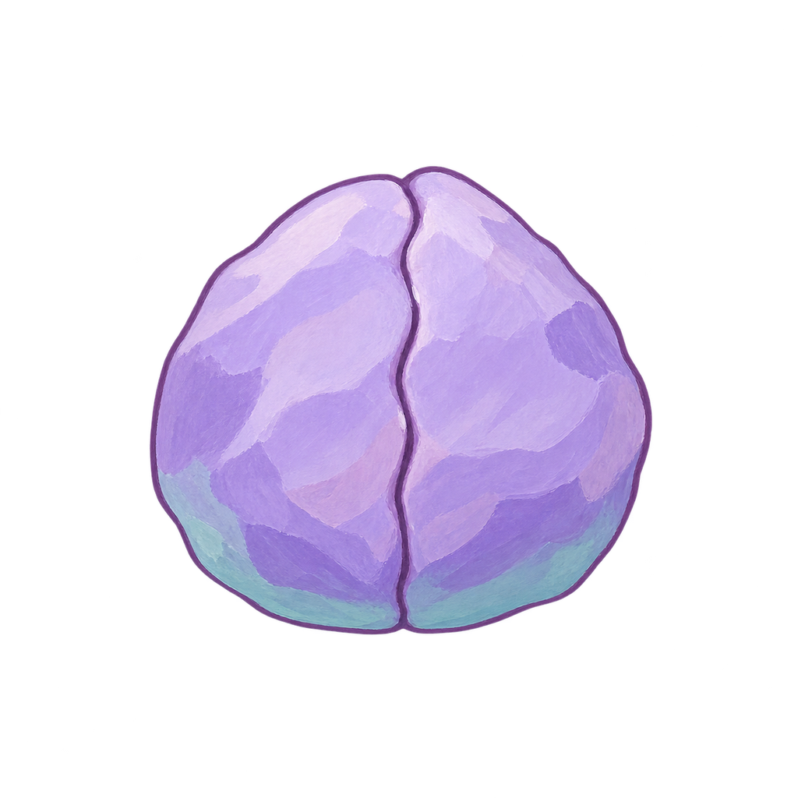
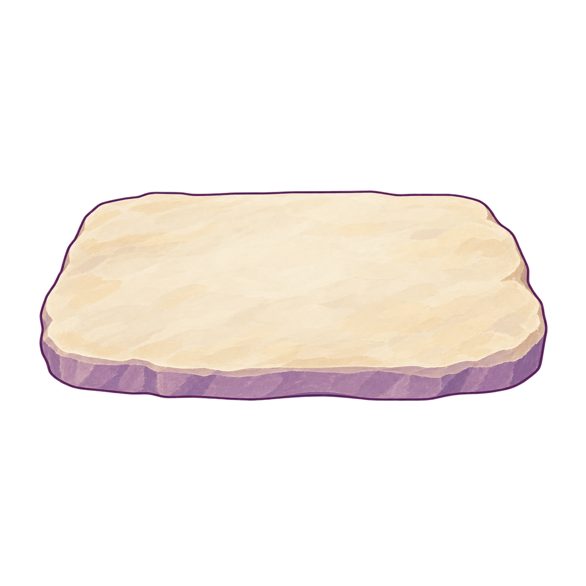
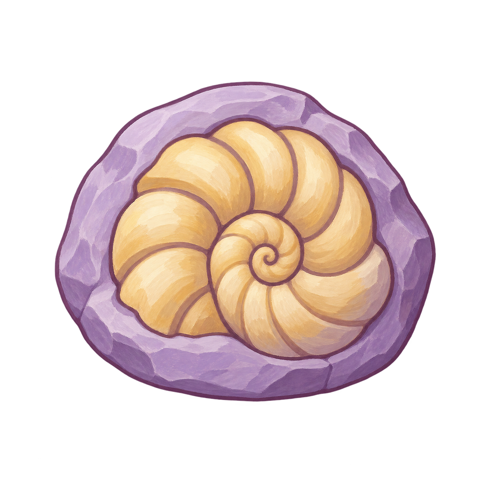
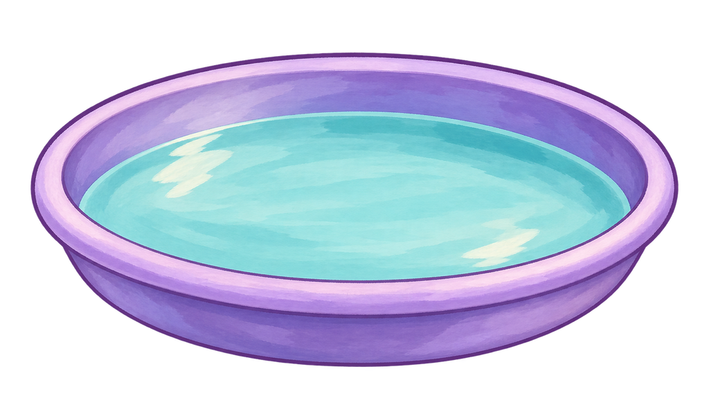
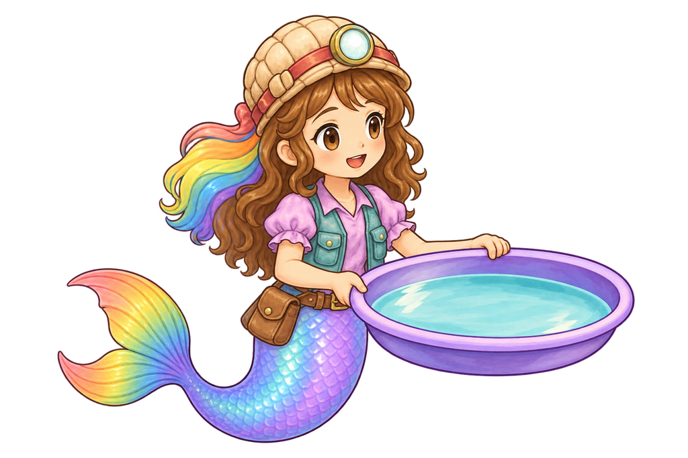

The game candidate now opens a painted geode to reveal crystals rooted inside both cavities. Four unchanged reviewed source states are bound at separate runtime paths. The first complete touch run also exposed an actor hidden behind the work panel; that defect is preserved below and her celebration rest is corrected.
All36 current production screenshots, spanning every ordinary RIVER/FOSSIL/PAN/GEODE phase at1280×720 and1600×720, were directly inspected. Geode object finish4.6; sampled four-state/base progression4.5 provisional. Room2.8, invitation2.9–3.4, panel4.0, remote actor contact2.7 and flat fossil/pan3.8–4.0 remain priorities. This is a continuation report, not the owner-approved comprehensive final report. Career entry is staged, main HUD suppressed; full castle/story entrances, intervening motion frames, device/child/owner acceptance remain open.
Fresh officialGodot4.7.2 unmodified full suite passes82/82;334 literal source hashes unchanged. 55 raw engine diagnostics retained and separately qualified; strict2D and creative acceptance remain open.
Current four-state reveal
Select an actual production view. The preview changes between intact archived frames; it creates no delivery pixels or motion.

Earned reveal: roots remain in the two cavities; Roshan claps.
Individual artwork
GEO-RUNTIME-CLOSED

Source/mounted object4.6; full action unassigned.
Broad painted lavender/plum shell, cream cavity lining and cyan/lilac embedded crystals preserve the source state. Exact intact technical derivative copied; source contours and material unchanged. closed shell is individually visible in the current actual production captures.
Broad painted lavender/plum shell, cream cavity lining and cyan/lilac embedded crystals preserve the source state. Exact intact technical derivative copied; source contours and material unchanged. narrow opening is individually visible in the current actual production captures.
Broad painted lavender/plum shell, cream cavity lining and cyan/lilac embedded crystals preserve the source state. Exact intact technical derivative copied; source contours and material unchanged. oblique exposed cavities is individually visible in the current actual production captures.
Broad painted lavender/plum shell, cream cavity lining and cyan/lilac embedded crystals preserve the source state. Exact intact technical derivative copied; source contours and material unchanged. fully exposed rooted interiors is individually visible in the current actual production captures.
These are individually evaluated painted details in one source image. Each cavity view retains its original raster pixels; the yellow rectangle identifies the reviewed component and is a library annotation. No extra asset or collectible is created.
Tall cyan crystal in the left cavity
Finish and sampled rooted ownership:4.6/5. The tall rear crystal has three broad cyan/cream faces and a readable tapered tip. The lilac crystal and smaller cyan crystal overlap its lower edge, while its base remains embedded in the plum mineral bed. The bright upper planes separate it from the darker cavity without a floating loot outline.
GEO-EMBEDDED-LEFT-1 · Cavity view from the unchanged source. Yellow mark is review annotation only. Complete action/device/child/owner approval remains open.
Middle lilac crystal in the left cavity
Finish and sampled rooted ownership:4.6/5. The lilac middle crystal provides a clear color contrast beside the tall cyan crystal. Its pale top and darker side face retain the painted facet language. Its lower tip is seated in the cavity and partly covered by the small front crystal; that overlap supports depth rather than a detached reward.
GEO-EMBEDDED-LEFT-2 · Cavity view from the unchanged source. Yellow mark is review annotation only. Complete action/device/child/owner approval remains open.
Small cyan crystal in the left cavity
Finish and sampled rooted ownership:4.6/5. The small front crystal is a compact three-face cyan form in front of the rear crystal. Its lower edge disappears into the cream/plum cavity material, preserving rooted ownership. It is decorative detail inside the large geode touch target; fine facet visibility on the physical phone is still unverified.
GEO-EMBEDDED-LEFT-3 · Cavity view from the unchanged source. Yellow mark is review annotation only. Complete action/device/child/owner approval remains open.
Tall lilac crystal in the right cavity
Finish and sampled rooted ownership:4.6/5. The tallest right crystal mirrors the left cavity hierarchy through a contrasting lilac identity. A pale peaked top and broad violet side planes remain visible behind the two cyan forms. Its base stays seated in the mineral bed, and the cream rim frames its silhouette without creating a separate pickup layer.
GEO-EMBEDDED-RIGHT-1 · Cavity view from the unchanged source. Yellow mark is review annotation only. Complete action/device/child/owner approval remains open.
Middle cyan crystal in the right cavity
Finish and sampled rooted ownership:4.6/5. The middle cyan crystal leans into the cavity beside the taller lilac form. Broad aqua faces and a pale top provide clear separation from the lavender bed. The smaller cyan crystal overlaps its foot; the layered bases read as one embedded cluster rather than three dropped prizes.
GEO-EMBEDDED-RIGHT-2 · Cavity view from the unchanged source. Yellow mark is review annotation only. Complete action/device/child/owner approval remains open.
Small cyan crystal in the right cavity
Finish and sampled rooted ownership:4.6/5. The smallest right crystal has a compact pale cap, aqua front and darker side face. Its visible foot meets the mineral bed below the leaning cyan crystal, so it belongs to the rock. Like the left front crystal, it is a decorative reveal detail; physical-device readability and complete timed continuity remain pending.
GEO-EMBEDDED-RIGHT-3 · Cavity view from the unchanged source. Yellow mark is review annotation only. Complete action/device/child/owner approval remains open.
Every current native view
geologist_1280_river_invitation
The generic halo floats above Roshan and the minimal mural; it does not depict a spring or readable dig site. Dark striped procedural room2.8 and abstract work landmarks remain priorities. Full-finned idle actor is clear4.6; no new geode source is visible here.
The intentional touch route creates a legible connected aqua channel, but its straight rectangular strips and repeated circular junctions read as a diagram rather than painted soil/water. The blank work field and two endpoint rings give little environmental context. Object3.8 at completion /3.5 initially, old panel4.0 and room2.8 remain priorities. Roshan crawls remotely instead of digging with visible hand contact2.7.
Native SHA-256 f611c2bbc11c8bbc22d40c0d1494fb9333f9840943140c9702ac8669c96e8429 · all scores are bounded drafting opinions.
geologist_1280_river_earned_completion
The intentional touch route creates a legible connected aqua channel, but its straight rectangular strips and repeated circular junctions read as a diagram rather than painted soil/water. The complete channel and now-visible cheer are retained. Object3.8 at completion /3.5 initially, old panel4.0 and room2.8 remain priorities. Roshan crawls remotely instead of digging with visible hand contact2.7. The actor stays outside the opaque work panel; visible cheer4.6 repairs the observed disappearance, without claiming contact or complete acting.
Native SHA-256 87aea1f99ecb8439a5b0e24bb5de9cb7e3d58c766e521647c5fca80ca28d6346 · all scores are bounded drafting opinions.
geologist_1280_fossil_invitation
Halo locates a generic flat table, with little illustrated fossil identity. Dark striped procedural room2.8 and abstract work landmarks remain priorities. Full-finned idle actor is clear4.6; no new geode source is visible here.
Native SHA-256 72773195e4ef7c4bdbde35a03746d9abde43598c151aa670421ac7bc0477e896 · all scores are bounded drafting opinions.
geologist_1280_fossil_task_open
A uniform opaque brown rectangle covers the fossil completely. The unseen fossil receives no visible object score; cover material3.2 is flat and the brush demonstration remains remote from Roshan. Old panel4.0, room2.8 and remote work contact2.7 remain separate. The actual phase advances only after deliberate assembly; celebration remains visible after the rest repair.
Native SHA-256 b804058a290a40026776de857dda4069e50f8c12a5fefff34974323e15e11e11 · all scores are bounded drafting opinions.
geologist_1280_fossil_brushed
The spiral and three conserved puzzle thirds are readable, but the active fossil is still the old flat SVG. Broad cream/plum lines do not supply the missing painted material. Source3.8 / assembly3.9 remain priorities; the new painted fossil draft is still unbound. Old panel4.0, room2.8 and remote work contact2.7 remain separate. The actual phase advances only after deliberate assembly; celebration remains visible after the rest repair.
Native SHA-256 8f8110fc179f275202e8456c6ea691cc732fe7a8ff92366f520ae78d0d96df40 · all scores are bounded drafting opinions.
geologist_1280_fossil_earned_completion
The spiral and three conserved puzzle thirds are readable, but the active fossil is still the old flat SVG. Broad cream/plum lines do not supply the missing painted material. Source3.8 / assembly3.9 remain priorities; the new painted fossil draft is still unbound. Old panel4.0, room2.8 and remote work contact2.7 remain separate. The actual phase advances only after deliberate assembly; celebration remains visible after the rest repair. The actor stays outside the opaque work panel; visible cheer4.6 repairs the observed disappearance, without claiming contact or complete acting.
Native SHA-256 5697585fadd22938cd90874a9f2e416f0a66160f58e4e34cfdd4e0bff475346b · all scores are bounded drafting opinions.
geologist_1280_pan_invitation
The invitation still displays a flat layered rock rather than the pan used by this task. Dark striped procedural room2.8 and abstract work landmarks remain priorities. Full-finned idle actor is clear4.6; no new geode source is visible here.
The active pan remains a procedural ellipse with broad navy rings and aqua water. Grains are simple discs3.8; earned minerals are outlined polygons3.4. Pan finish4.0 and remote floor-crawling contact2.7 remain priorities. The source4.6 painted pan and connected gripping draft have not been bound into this production state. Correct source provenance does not approve these current objects.
The active pan remains a procedural ellipse with broad navy rings and aqua water. Grains are simple discs3.8; earned minerals are outlined polygons3.4. Pan finish4.0 and remote floor-crawling contact2.7 remain priorities. The source4.6 painted pan and connected gripping draft have not been bound into this production state. Correct source provenance does not approve these current objects.
The active pan remains a procedural ellipse with broad navy rings and aqua water. Grains are simple discs3.8; earned minerals are outlined polygons3.4. Pan finish4.0 and remote floor-crawling contact2.7 remain priorities. The source4.6 painted pan and connected gripping draft have not been bound into this production state. Correct source provenance does not approve these current objects. The actor stays outside the opaque work panel; visible cheer4.6 repairs the observed disappearance, without claiming contact or complete acting.
A halo above the imp and flat mural crystals remains the invitation; this is not the new painted closed geode. Dark striped procedural room2.8 and abstract work landmarks remain priorities. Full-finned idle actor is clear4.6; no new geode source is visible here.
Native SHA-256 20dc3e7a47089ece637c2bac0741c9f05ea70d9f47fdc7d6a278ef247b86f12b · all scores are bounded drafting opinions.
geologist_1280_geode_task_open
Closed shell has broad brushed lavender bands, a clear plum rim and a large readable seam. Five yellow markers are visible on the actual object. Geode finish/embedded ownership4.6 and sampled four-state/base progression4.5 provisional are separate from old panel4.0, dark procedural room2.8 and remote crawling work contact2.7. Full intervening timed frames, castle/story entry, device, child and owner acceptance remain open.
All five earned markers become aqua while the shell stays closed; a drag is still required to reveal the interior. Geode finish/embedded ownership4.6 and sampled four-state/base progression4.5 provisional are separate from old panel4.0, dark procedural room2.8 and remote crawling work contact2.7. Full intervening timed frames, castle/story entry, device, child and owner acceptance remain open.
Native SHA-256 06c322eb54ab24615667061b02cb7476706b73f6f8ab25bb0fbfb82043d2f9d8 · all scores are bounded drafting opinions.
geologist_1280_geode_early_crack
The narrow authored crack shows cream cavity rims and occluded cyan/lilac tips; no detached mineral layer appears. Geode finish/embedded ownership4.6 and sampled four-state/base progression4.5 provisional are separate from old panel4.0, dark procedural room2.8 and remote crawling work contact2.7. Full intervening timed frames, castle/story entry, device, child and owner acceptance remain open.
Native SHA-256 de7816e067623d98bb2e05e2a3200a878f1ac0d1d1656985af9f0f98531067e0 · all scores are bounded drafting opinions.
geologist_1280_geode_middle_open
Oblique cavities expose three rooted crystals per half. Color order remains consistent; both shell bases stay on the same515 logical baseline. Geode finish/embedded ownership4.6 and sampled four-state/base progression4.5 provisional are separate from old panel4.0, dark procedural room2.8 and remote crawling work contact2.7. Full intervening timed frames, castle/story entry, device, child and owner acceptance remain open.
Both complete cavities show the six rooted crystals. The object is fully illustrated before the final120px progress threshold; half widths retain source proportions. Geode finish/embedded ownership4.6 and sampled four-state/base progression4.5 provisional are separate from old panel4.0, dark procedural room2.8 and remote crawling work contact2.7. Full intervening timed frames, castle/story entry, device, child and owner acceptance remain open.
Native SHA-256 ce05e91765f031f2db9a49bd74d6845d4fd50fa6aaa3d789416a54cf8db19462 · all scores are bounded drafting opinions.
geologist_1280_geode_earned_completion
The fully exposed interiors retain their rooted crystals. Roshan is now visible at the task rest and uses the existing clapping pose, with no extra crystal in her hand. Geode finish/embedded ownership4.6 and sampled four-state/base progression4.5 provisional are separate from old panel4.0, dark procedural room2.8 and remote crawling work contact2.7. Full intervening timed frames, castle/story entry, device, child and owner acceptance remain open. The actor stays outside the opaque work panel; visible cheer4.6 repairs the observed disappearance, without claiming contact or complete acting.
The generic halo floats above Roshan and the minimal mural; it does not depict a spring or readable dig site. Dark striped procedural room2.8 and abstract work landmarks remain priorities. Full-finned idle actor is clear4.6; no new geode source is visible here.
Native SHA-256 475dcca652fb4e0cc1ad232c05b5685f0addd0401f38f567571e7941b9a30019 · all scores are bounded drafting opinions.
geologist_1600_river_task_open
The intentional touch route creates a legible connected aqua channel, but its straight rectangular strips and repeated circular junctions read as a diagram rather than painted soil/water. The blank work field and two endpoint rings give little environmental context. Object3.8 at completion /3.5 initially, old panel4.0 and room2.8 remain priorities. Roshan crawls remotely instead of digging with visible hand contact2.7.
The intentional touch route creates a legible connected aqua channel, but its straight rectangular strips and repeated circular junctions read as a diagram rather than painted soil/water. The complete channel and now-visible cheer are retained. Object3.8 at completion /3.5 initially, old panel4.0 and room2.8 remain priorities. Roshan crawls remotely instead of digging with visible hand contact2.7. The actor stays outside the opaque work panel; visible cheer4.6 repairs the observed disappearance, without claiming contact or complete acting.
Native SHA-256 c18f4fa43831285c1a3ae40439505c8db8cda1d111d491d42d7ef34a84f74181 · all scores are bounded drafting opinions.
geologist_1600_fossil_invitation
Halo locates a generic flat table, with little illustrated fossil identity. Dark striped procedural room2.8 and abstract work landmarks remain priorities. Full-finned idle actor is clear4.6; no new geode source is visible here.
Native SHA-256 5d66448b6ecbac8e9ccff4a7d0cf960f5b63a0d0b35773fe7cc11ffaf8161636 · all scores are bounded drafting opinions.
geologist_1600_fossil_task_open
A uniform opaque brown rectangle covers the fossil completely. The unseen fossil receives no visible object score; cover material3.2 is flat and the brush demonstration remains remote from Roshan. Old panel4.0, room2.8 and remote work contact2.7 remain separate. The actual phase advances only after deliberate assembly; celebration remains visible after the rest repair.
The spiral and three conserved puzzle thirds are readable, but the active fossil is still the old flat SVG. Broad cream/plum lines do not supply the missing painted material. Source3.8 / assembly3.9 remain priorities; the new painted fossil draft is still unbound. Old panel4.0, room2.8 and remote work contact2.7 remain separate. The actual phase advances only after deliberate assembly; celebration remains visible after the rest repair.
Native SHA-256 139ba044bd856cd271af55ce913ce2b76ce2cf5f7e702a7afd74bcf0476cd57c · all scores are bounded drafting opinions.
geologist_1600_fossil_earned_completion
The spiral and three conserved puzzle thirds are readable, but the active fossil is still the old flat SVG. Broad cream/plum lines do not supply the missing painted material. Source3.8 / assembly3.9 remain priorities; the new painted fossil draft is still unbound. Old panel4.0, room2.8 and remote work contact2.7 remain separate. The actual phase advances only after deliberate assembly; celebration remains visible after the rest repair. The actor stays outside the opaque work panel; visible cheer4.6 repairs the observed disappearance, without claiming contact or complete acting.
The invitation still displays a flat layered rock rather than the pan used by this task. Dark striped procedural room2.8 and abstract work landmarks remain priorities. Full-finned idle actor is clear4.6; no new geode source is visible here.
Native SHA-256 bd8922368e2d5a1e395f732185fe230a1050d1bd6f41bc6707c872b0e0a5fa01 · all scores are bounded drafting opinions.
geologist_1600_pan_task_open
The active pan remains a procedural ellipse with broad navy rings and aqua water. Grains are simple discs3.8; earned minerals are outlined polygons3.4. Pan finish4.0 and remote floor-crawling contact2.7 remain priorities. The source4.6 painted pan and connected gripping draft have not been bound into this production state. Correct source provenance does not approve these current objects.
Native SHA-256 176f0a6a7e8773134296c77c83925ae25812d0dcb6da06e34c7d344d118dcefd · all scores are bounded drafting opinions.
geologist_1600_pan_partial_pan
The active pan remains a procedural ellipse with broad navy rings and aqua water. Grains are simple discs3.8; earned minerals are outlined polygons3.4. Pan finish4.0 and remote floor-crawling contact2.7 remain priorities. The source4.6 painted pan and connected gripping draft have not been bound into this production state. Correct source provenance does not approve these current objects.
The active pan remains a procedural ellipse with broad navy rings and aqua water. Grains are simple discs3.8; earned minerals are outlined polygons3.4. Pan finish4.0 and remote floor-crawling contact2.7 remain priorities. The source4.6 painted pan and connected gripping draft have not been bound into this production state. Correct source provenance does not approve these current objects. The actor stays outside the opaque work panel; visible cheer4.6 repairs the observed disappearance, without claiming contact or complete acting.
Native SHA-256 c30af194ef303d887bbe99db5ba0ccc412eaea331267304137a6d65c153cb293 · all scores are bounded drafting opinions.
geologist_1600_geode_invitation
A halo above the imp and flat mural crystals remains the invitation; this is not the new painted closed geode. Dark striped procedural room2.8 and abstract work landmarks remain priorities. Full-finned idle actor is clear4.6; no new geode source is visible here.
Closed shell has broad brushed lavender bands, a clear plum rim and a large readable seam. Five yellow markers are visible on the actual object. Geode finish/embedded ownership4.6 and sampled four-state/base progression4.5 provisional are separate from old panel4.0, dark procedural room2.8 and remote crawling work contact2.7. Full intervening timed frames, castle/story entry, device, child and owner acceptance remain open.
Native SHA-256 9551733684bbeef86aeb2d160a152f03da72a97f8b95c9fe98fcb4387984b83a · all scores are bounded drafting opinions.
geologist_1600_geode_five_seams_ready
All five earned markers become aqua while the shell stays closed; a drag is still required to reveal the interior. Geode finish/embedded ownership4.6 and sampled four-state/base progression4.5 provisional are separate from old panel4.0, dark procedural room2.8 and remote crawling work contact2.7. Full intervening timed frames, castle/story entry, device, child and owner acceptance remain open.
The narrow authored crack shows cream cavity rims and occluded cyan/lilac tips; no detached mineral layer appears. Geode finish/embedded ownership4.6 and sampled four-state/base progression4.5 provisional are separate from old panel4.0, dark procedural room2.8 and remote crawling work contact2.7. Full intervening timed frames, castle/story entry, device, child and owner acceptance remain open.
Native SHA-256 a5b511a9a6ed8af8220be5cbf8b49653c4ae4bd120d68d70d92038e78d1a956a · all scores are bounded drafting opinions.
geologist_1600_geode_middle_open
Oblique cavities expose three rooted crystals per half. Color order remains consistent; both shell bases stay on the same515 logical baseline. Geode finish/embedded ownership4.6 and sampled four-state/base progression4.5 provisional are separate from old panel4.0, dark procedural room2.8 and remote crawling work contact2.7. Full intervening timed frames, castle/story entry, device, child and owner acceptance remain open.
Both complete cavities show the six rooted crystals. The object is fully illustrated before the final120px progress threshold; half widths retain source proportions. Geode finish/embedded ownership4.6 and sampled four-state/base progression4.5 provisional are separate from old panel4.0, dark procedural room2.8 and remote crawling work contact2.7. Full intervening timed frames, castle/story entry, device, child and owner acceptance remain open.
The fully exposed interiors retain their rooted crystals. Roshan is now visible at the task rest and uses the existing clapping pose, with no extra crystal in her hand. Geode finish/embedded ownership4.6 and sampled four-state/base progression4.5 provisional are separate from old panel4.0, dark procedural room2.8 and remote crawling work contact2.7. Full intervening timed frames, castle/story entry, device, child and owner acceptance remain open. The actor stays outside the opaque work panel; visible cheer4.6 repairs the observed disappearance, without claiming contact or complete acting.
Native SHA-256 6a5c2312e5fd0074969005b0fbdb1a41b88deec39dc260bca54a095f87fd9f50 · all scores are bounded drafting opinions.
Remaining individual review priorities
Current below-floor artwork and interaction problems remain separate from the four passing geode source states. Candidate thumbnails show preserved previously reviewed sources; they do not imply a runtime replacement. Exact priority and source data.
Actual geology room
Current material/contact score:2.8/5
Dark flat bands and generic cave mural remain in the actual room. Existing grotto drafts do not meet native2048×2048 per-screen coverage; a visually attractive undersize image cannot establish runtime readiness.
Required evidence: Inventory reusable approved native masters; preserve the approved composition, meet native coverage and tile seams, and inspect all four ordinary invitations/work contexts.
Four actual work invitations
Current material/contact score:[2.9, 3.4]/5
PAN currently invites with a layered rock, FOSSIL with a minimal table, RIVER with an abstract halo, and GEODE with flat mural crystals. These are individually recorded in REVIEW.json, not approved by the new geode source.
Required evidence: Show the actual task object and a stable support/arrival mark; preserve intentional touch and spoken/pointer instruction.
Current ochre work panel
Current material/contact score:4.0/5
The current large uniform rounded panel has little painted stone material. The separately reviewed stone slab is available but is not bound here; it must retain its native aspect and support every actual brush/piece/pan/geode state.
Previously reviewed candidate source:4.6/5, still unbound.

Required evidence: Reuse the preserved painted slab without stretching it or allowing objects, homes, cues or gestures to float beyond its support.
Active fossil and three assembly pieces
Current material/contact score:3.8/5
The live fossil and its conserved thirds remain flat SVG pixels. A complete painted fossil source is ready for a binding review; its more compact source ratio cannot be stretched into the old wide frame. The three pieces must reconstruct that same raster image.
Previously reviewed candidate source:4.6/5, still unbound.

Required evidence: Preserve source proportions and one consistent source region across full fossil, faint target, three pieces and invitation. Check actual brushing, dragging, snapping and saved re-entry at both widths.
Fossil dirt cover
Current material/contact score:3.2/5
The entire fossil is hidden by a uniform brown rectangle. Its flat cover is a distinct material problem; the unseen fossil gets no visible grade at this state.
Required evidence: Find a reusable painted soil material or generate only this missing material. Preserve actual brush clearing and transparent-reveal continuity.
Live pan, grains and recovered minerals
Current material/contact score:4.0/5
The live pan still consists of procedural ellipses; grains are discs and recovered minerals are flat polygons. Painted pan/grain/mineral sources were separately reviewed. The new geode reveal does not replace these objects.
Previously reviewed candidate source:4.6/5, still unbound.

Required evidence: Bind intact painted sources at their own runtime paths, maintain pan/water geometry, and audit washing progression and mineral waterline at every earned stage.
Live excavated river
Current material/contact score:3.8/5
Connected aqua rectangles and repeated circular nodes read like a diagram. They correctly track the intentional excavation, but lack the current painted terrain/water material language.
Required evidence: Keep the existing connected-path behavior while replacing the material presentation and depicting digging at the actual point of contact.
Roshan working away from all four objects
Current material/contact score:2.7/5
The current work animation crawls on the floor away from the active material. A connected static pan grip was reviewed separately; all three local video references remain below the full-action floor. A static grip image cannot establish travel, pickup, alternating rocking, release or return.
Previously reviewed candidate source:4.6/5, still unbound.

Required evidence: Bind an appropriate working pose and prove meaningful hand/tool/object contact throughout each real action; inspect complete timed routes rather than grading selected poses as motion.
Geode opening remains a sequence priority
Sampled static/base progression:4.5/5, provisional. Individual painted states and rooted-crystal ownership:4.6/5. Complete timed action remains unassigned.
The sampled closed/crack/oblique/full states preserve rooted crystals and the common base, but selected still images do not establish every intervening frame or complete child-driven timing. The4.5 provisional minimum remains an inclusive refinement priority.
Required evidence: Review the complete ordinary timed opening, especially state changes near40/90 logical pull and release/re-entry. Refine only an actually weak intermediate state or interaction; preserve the passing source states and never substitute loose crystals.
Preserved earlier attempts
First18-view run: six directly inspected, including the invisible completion actor. Intermediate36-view run: one completion directly inspected; the remaining views are available but unscored. None is silently promoted to current acceptance.